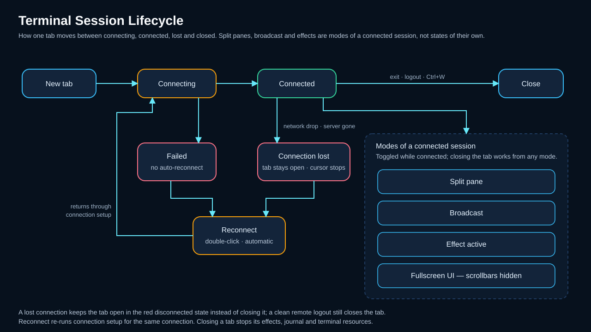

Terminalsitzungen¶
KorTTY bietet eine Terminalschnittstelle mit Registerkarten, die mehrere gleichzeitige SSH-Verbindungen, geteilte Bildschirmlayouts und interaktive Terminalverwaltungsfunktionen unterstützt. In dieser Anleitung werden Registerkartenvorgänge, die Unterstützung mehrerer Fenster, die Anpassung des Terminals und erweiterte Sitzungsfunktionen behandelt.
Sitzungslebenszyklus¶
Das folgende Diagramm zeigt die Registerkarte „Terminal“ und den Sitzungslebenszyklus, einschließlich Split-Screen- und Broadcast-Modi.

Arbeiten mit Tabs¶
Verwalten Sie mehrere SSH-Sitzungen mit diesen Registerkartenoperationen:
| Aktion | Verknüpfung |
|---|---|
| New Tab | Ctrl+T (Cmd+T on macOS) — opens Schnellverbindung to start a new session |
| Close Tab | Ctrl+W (Befehl+W unter macOS) – schließt die aktive Registerkarte. Sie werden nur dann zur Bestätigung aufgefordert, wenn etwas verloren geht: Die Registerkarte hat geteilte Bereiche oder ein Befehl wird noch ausgeführt (eine lokale Shell mit einem laufenden untergeordneten Prozess oder eine SSH-Sitzung, die nicht zur Eingabeaufforderung gelangt). Ein inaktives einzelnes Terminal wird sofort geschlossen. Die verbindungsspezifische Einstellung Ohne Bestätigung schließen unterdrückt die Eingabeaufforderung vollständig. |
| Nächster Tab | ++ctrl+Tab++ |
| Vorheriger Tab | ++ctrl+shift+Tab++ |
| Erneut verbinden | Klicken Sie mit der rechten Maustaste auf eine Registerkarte, den Terminalbereich oder einen Servereintrag im Dashboard. Ist die Verbindung aktiv, wird sie sofort geschlossen und wieder aufgebaut; Wenn die Verbindung getrennt wird, wird sie wiederhergestellt. Das Terminalfenster bleibt geöffnet. |
| Registerkartengruppen | Klicken Sie mit der rechten Maustaste auf eine Registerkarte, um sie zur besseren Organisation einer benannten Gruppe zuzuweisen. |
Sicher verbinden¶
Interaktive SSH-Terminals teilen das Host-Schlüsselvertrauen mit SFTP sowie dem SSH-Bootstrap, der von Mosh verwendet wird. Die erste Verbindung zu einem normalisierten Host und Port zeigt den Schlüsselalgorithmus und den OpenSSH-SHA-256-Fingerprint mit Nein standardmäßig ausgewählt. Nach der Bestätigung und Annahme wird eine exakte Übereinstimmung stumm verbunden; ein geändertes Schlüssel wird hart blockiert und wird nicht automatisch erneut versucht. Siehe SSH-Host-Schlüsselverifikation.
Beim Öffnen einer Verbindung mit demselben Server oder einer neu ausgewählten Verbindung in einem Split wird ein Fortschrittsdialog angezeigt, während der SSH-Handshake auf einem Worker ausgeführt wird. Die Schnittstelle reagiert weiterhin sowohl auf die Host-Tasten-Bestätigung als auch auf Eingabeaufforderungen zur interaktiven Tastaturauthentifizierung.
Einige Fehler werden sofort abgelehnt, anstatt erneut versucht zu werden, weil ein erneuter Versuch das Ergebnis nicht ändern kann – ein geänderter Host-Schlüssel, eine fehlende oder nicht lesbare SSH-Schlüsseldatei, ein Jump-Server dessen gespeichertes Passwort nicht verwendet werden kann (z. B. wenn das Tresor-Verzeichnis gesperrt ist) oder dessen Einrichtung unvollständig ist, eine Mosh-Verbindung mit einem Jump-Server konfiguriert ist oder ein fehlender Mosh-Runtime vorliegt. Das Terminal löscht den Inhalt und zeigt sofort die Ursache an, statt durch die Wiederholungsanzahl zu arbeiten. Siehe Sprungserver für die Jump-Server-Fälle und die Mosh-Einschränkung.
Der angeheftete SithTermFX-Build von KorTTY enthält auch eine überprüfte Korrektur der Begrenzung der unteren Zeile: Beim Bewegen über einen Hyperlink oder die letzte sichtbare Terminalzeile wird TerminalTextBuffer nicht mehr nach der nicht vorhandenen Zeile bei line == height gefragt.
Verbindungsverlust und automatische Wiederherstellung der Verbindung¶
Wenn eine bestehende SSH-Verbindung verloren geht – Netzwerkabbruch, VPN-Abschaltung, Server entfernt – schließt sich der Tab nicht. Er wechselt stattdessen in einen roten Zustand für abgebrochene Verbindungen: Der Tab-Titel erhält einen (DISCONNECT)-Präfix, der Tab färbt sich dunkelrot, eine rote Statusleiste zeigt die Uhrzeit an, zu der die Verbindung verloren ging, und der Terminalcursor blendet sich aus, sodass eine tote Sitzung nicht mehr als lebendig erscheint. Nur ein normales Remote-Abmelden (Tipp von exit oder Ctrl+D am Prompt) schließt den Tab.
KorTTY bemerkt einen stillen Transporttod innerhalb von etwa zehn Sekunden: Alle paar Sekunden sendet es eine SSH-Liveness-Prüfung (eine globale Anfrage, die der Server beantworten muss, dieselbe Technik wie ServerAliveInterval von OpenSSH) und behandelt zwei aufeinanderfolgende unbeantwortete Prüfungen als verlorene Verbindung. Das Probe aktiviert sich erst, nachdem der Server einmal geantwortet hat, sodass Server, die nie auf solche Anfragen antworten, ihre Sitzungen unberührt lassen. Dies ist unabhängig vom Keep-Alive-Heartbeat SSH , der inaktive Verbindungen offen hält, eine unterbrochene Verbindung jedoch nicht erkennt.
Um die Sitzung wieder in derselben Registerkarte aufzunehmen, doppelklicken Sie auf die rote Statusleiste oder die rote Registerkarte oder verwenden Sie Erneut verbinden im Registerkarten-, Terminal- oder Dashboard-Kontextmenü. In einer geteilten Registerkarte werden die Bereiche, deren Verbindung unterbrochen wurde, einzeln geschlossen. Im letzten verbleibenden Bereich bleibt die Registerkarte geöffnet und es wird das Angebot zur erneuten Verbindung angezeigt.
Wenn Verlorene Verbindungen automatisch wiederherstellen aktiviert ist (Einstellungen → Terminal, standardmäßig aktiviert), stellt die Registerkarte die Verbindung von selbst wieder her: Versuche beginnen nach 3 Sekunden und werden nach 5, 10, 20 und 30 Sekunden unterbrochen, bis zu einem Versuch pro Minute, und die rote Statusleiste zählt bis zum nächsten Versuch herunter. Eine erfolgreiche erneute Verbindung, eine manuelle erneute Verbindung oder das Schließen der Registerkarte beendet die automatischen Versuche. Permanente Fehler – Authentifizierung, Host-Schlüssel-Überprüfung, Konfigurationsverweigerungen – stoppen sie ebenfalls, sodass niemals ein falsches Passwort gegen den Server gehämmert wird. Während a session journal is running, its red decision bar takes precedence and no automatic attempt starts — the journal asks whether to reconnect and continue or to end with its closing summary. See Settings → Terminal for the setting.
Multi-Window-Unterstützung¶
Öffnen Sie zusätzliche Fenster, um Verbindungen nach Projekt oder Umgebung zu organisieren:
- Neues Fenster: Ctrl+Shift+N (Cmd+Shift+N auf macOS) öffnet ein neues korTTY-Fenster. Jedes Fenster kann seine eigenen Tabs und Verbindungen haben.
- Registerkarten zwischen Fenstern verschieben: Ziehen Sie eine Registerkarte aus der Registerkartenleiste und legen Sie sie auf der Registerkartenleiste eines anderen KorTTY-Fensters ab, um diese Registerkarte (und ihre Sitzung, einschließlich aller geteilten Terminals) in das andere Fenster zu verschieben.
- Tabs neu anordnen: Ziehen Sie einen Tab innerhalb desselben Fensters, um seine Reihenfolge zu ändern; die Registerkarte „+“ bleibt am Ende.
Terminal-Kontextmenü¶
Rechtsklick innerhalb eines Terminals öffnet dessen Kontextmenü; in einem geteilten Tab wirkt es auf das angeklickte Pane. Das Menü beginnt mit den Bearbeitungsbefehlen:
| Eintrag | Was es tut |
|---|---|
| Kopieren | Kopiert den ausgewählten Text in die Zwischenablage und behält die Auswahl bei. Ausgegraut, wenn nichts ausgewählt ist. |
| Einfügen | Sendet den Text der Zwischenablage an die Sitzung, genauso wie die Einfügen-Verknüpfung. |
| Puffer löschen | Löscht den Scrollback und den Bildschirm, behält jedoch die Prompt-Zeile bei. Während ein Vollbildprogramm wie vim oder less läuft, tut es nichts. |
| Suchen | Öffnet die Suchleiste oben rechts im Bereich, genauso wie Bearbeiten → Suchen... (Ctrl+F, Cmd+F auf macOS). Tippen Sie zum Hervorheben von Übereinstimmungen, drücken Enter oder Down für die nächste Übereinstimmung und Up für die vorherige, sowie Esc zum Schließen der Leiste. |
Darunter folgen die Einträge anderer Funktionen, in dieser Reihenfolge und einige nur dort, wo sie zutreffen: Menüleiste anzeigen (während die Menüleiste verborgen ist), Im Snippet-Editor öffnen, das KI-Untermenü, die Session-Journal-Screenshot- und Notizeinträge, Thema, Terminal-Effekt, Neu verbinden und Befehls-Zeitstempel anzeigen. Das Extras-Untermenü am Ende enthält Terminal teilen, Schriftgröße (siehe Schriftgröße und Zoom) und Broadcast-Modus.
Schriftgröße und Zoom¶
Passen Sie die Schriftgröße des aktiven Terminals im Handumdrehen an, ohne die Verbindung erneut herzustellen:
| Verknüpfung | Aktion |
|---|---|
| Alt++ | Zoom ein (Schriftgröße vergrößern) |
| Alt+- | Verkleinern (Schriftgröße verringern) |
| Alt+0 | Zoom zurücksetzen auf gespeicherte/Standard-Schriftgröße |
| Ctrl + Mausrad | Vergrößern/verkleinern Sie das Terminal (Befehlstaste + Rad unter macOS) |
Wenn Sie Ctrl (oder Cmd unter macOS) gedrückt halten und mit dem Mausrad über das Terminal scrollen, ändert sich die Schriftgröße – Rad nach oben vergrößert, Rad nach unten verkleinert – anstatt durch den Puffer zu scrollen. Dies ergänzt die Tastenkombinationen Alt++ / Alt+- / Alt+0.
Zoom zurücksetzen stellt die Schriftgröße und -familie wieder her, wie sie bei der Verbindung waren, als Sie den Tab geöffnet haben (oder die gespeicherten Einstellungen der Verbindung oder die globale Vorgabe). Das Kontextmenü des Terminals hat dieselben Steuerelemente: Rechtsklick → Extras → Schriftgröße → Vergrößern, Verkleinern (jeweils zwei Punkte pro Schritt) oder Zurücksetzen. Der Zoom-Level gilt für den aktuellen Tab – alle seine geteilten Bereiche ändern sich gemeinsam – und lässt andere Tabs unverändert.
Hintergrundtransparenz¶
Ansicht → Zoom → Hintergrundtransparenz ist ein Schieberegler (0–100 %), der den Terminalhintergrund auf dem Desktop durchscheinen lässt, während der Text völlig undurchsichtig und scharf bleibt. Bei 0 % ist der Hintergrund einfarbig; Höhere Werte lassen mehr vom Desktop durchscheinen. Der Wert wird über Neustarts hinweg gespeichert und wiederhergestellt.
Nur der Terminal-Bereich wird transparent — die Titelzeile, Menüleiste, Statusleiste und jede Tab ohne Terminal bleiben fest, sodass das Fenster niemals zu einem durchsichtigen Loch wird.
Horizontale, vertikale und geschachtelte Split-Terminals erben den aktiven Transparengrad, einschließlich der Panes, die nach der Aktivierung der Transparenz hinzugefügt wurden. Der Eintritt in Vollbild mit F12 oder in Vollbild mit nur Terminal-Modus mit Ctrl+Shift+F macht die Terminalfläche vorübergehend opak, ohne den gespeicherten Wert zu ändern; das Verlassen des Vollbildmodus setzt diesen Wert jedem Pane zurück.
Da ein durchsichtiges Fenster einen anderen Fensterstil verwendet, den das Betriebssystem beim Öffnen des Fensters korrigiert, wird das Ein- oder Ausschalten der Transparenz (Überschreiten von 0 %) erst nach einem Neustart vollständig wirksam; Die Statusleiste zeigt einen Hinweis an, wenn Sie diesen Schwellenwert überschreiten. Das Anpassen des Pegels bereits im transparenten Modus wird live angewendet. Im transparenten Modus verwendet das Fenster eine schlanke benutzerdefinierte Titelleiste (Ziehen zum Verschieben, Schaltflächen zum Minimieren/Maximieren/Schließen, Doppelklick auf den Streifen zum Maximieren, Ziehen an den Rändern zum Ändern der Größe).
Der Schieberegler befindet sich nur in der Menüleiste im Fenster (die native macOS-Menüleiste kann keinen Schieberegler hosten).
Lokale Shell-Registerkarten¶
Abgesehen von SSH und Mosh kann ein Terminal-Tab eine Lokale Shell hosten – die eigene Shell der lokalen Maschine, die über eine Pseudoterminal-Verbindung (siehe Lokale Shell) geöffnet wird. Einige Terminal-Verhaltensweisen sind lokaler Shell bewusst:
- Ctrl+D schließt den Tab für lokale cmd.exe/PowerShell-Sitzungen. Diese Windows-Shells beenden sich nicht bei EOF, weshalb Ctrl+D sonst keine Wirkung hätte. Für Shells der bash-Familie (Git Bash/Cygwin/WSL, macOS/Linux) und SSH hat Ctrl+D seinen normalen Sinn für EOF – die Shell beendet sich und der lokale Tab wird automatisch geschlossen.
- Bestätigung schließen verwendet den Wortlaut „Local-Shell“ anstelle von „SSH-Verbindung beenden?“ und die Eingabeaufforderung zum Schließen des Fensters ist transportneutral („Aktive Sitzungen“), da ein Fenster SSH-, Mosh- und Local-Shell-Registerkarten mischen kann.
- Das aktuelle Verzeichnis folgt der interaktiven Shell. Unter macOS und Linux aktualisiert korTTY es vom lokalen Shell-Prozess; Native PowerShell- und cmd-Eingabeaufforderungen stellen absolute Windows-Pfade bereit. Nach
cd,pushd,popdoderSet-Locationlöst Im Snippet-Editor öffnen einen ausgewählten Dateinamen in das aktuelle Verzeichnis und nicht in das Startverzeichnis der Registerkarte auf. Wenn das Verzeichnis nicht sicher bestimmt oder zugeordnet werden kann, stoppt korTTY mit einem Fehler, anstatt eine gleichnamige Datei aus dem falschen Verzeichnis zu öffnen. - Nach einer Identitätswechsel wird „Im Snippet-Editor öffnen“ grau. Sobald die Sitzung nicht mehr als die Identität läuft, mit der der Tab geöffnet wurde – nach
su, einem innerensshoder einem Shell-Start-sudo– ist die Kontextmenü-Eintrag deaktiviert, sowohl in SSH-Tabs als auch in lokalen Shell-Tabs: Die verfolgten Verzeichnisse und die Dateizugriffe gehören weiterhin der ursprünglichen Anmeldung und würden die falsche Pfadauflösung ergeben. Der Eintrag wird automatisch wieder aktiv, sobald der Prompt den ursprünglichen Benutzer anzeigt (normalerweise nachexit). Ein lokaler Shell-Tab, dessen konfigurierte Shell-Befehl selbst ein Remote-Client wiesshodermoshist, bleibt der Eintrag für den gesamten Tab deaktiviert. Falls die Belastung trotzdem ausgelöst wird, beendet korTTY mit einem Fehler statt die falsche Pfadauflösung vorzunehmen. Die KI-Kontextmenü-Aktionen folgen der gleichen Regel: Sie bieten nicht mehr die Option, den Inhalt der ausgewählten Datei dem Chat hinzuzufügen (siehe Eine ausgewählte Datei dem Chat hinzufügen). - Zwischenablagetext bleibt in Agentenverknüpfungen erhalten. Eingegebener und eingefügter Text durchläuft denselben Terminal-Eingabefilter, einschließlich Einfügen in Klammern und geteilter UTF-8-Eingabe, sodass ein eingefügter Dateiname Teil der
agent ...-Anfrage bleibt und Enter ihn genau einmal versendet.
Sitzungsjournal¶
Jede Terminal-Registerkarte kann eine behalten Sitzungsjournal: Serverausgaben und eingegebene Befehle werden in ein Capture-Log aufgenommen, eine KI komprimiert sie zu einer lesbaren Zeitleiste und Screenshots und Notizen können über die Journalleiste oder das Rechtsklickmenü des Terminals hinzugefügt werden. Journale starten automatisch für Verbindungen, die sie aktivieren, oder rückwirkend für eine laufende Sitzung über Tools > Sitzungsjournal starten/stoppen – der vorhandene Scrollback wird importiert. Siehe Sitzungsjournal.
Split-Screen mit Übertragung¶
Teilen Sie die Terminalansicht, um mehrere Verbindungen nebeneinander anzuzeigen, und senden Sie optional Eingaben an alle Bereiche gleichzeitig.
Vorgänge aufteilen¶
- Geteilter Bereich: Erstellen Sie über das Kontextmenü oder Tastaturkürzel horizontale oder vertikale Teilungen innerhalb einer Registerkarte.
- Unabhängige Sitzungen: In jedem Bereich kann eine andere SSH-Verbindung angezeigt werden.
- Anpassbare Fensterbereiche: Ziehen Sie die Trennlinien, um die Fenstergrößen anzupassen.
- Zugriffsgrund einmal pro Registerkarte abgefragt: Wenn ein Server nach einem Grund für die Verbindung fragt, wie es ein Jump-Host im CyberArk-Stil tut, fragt ein Split nicht erneut. korTTY sendet den Grund, der beim Öffnen des Tabs angegeben wurde, da ein Server, der danach fragt, eine Sitzung schließt, die mit nichts antwortet. Bei einer Aufteilung auf einen anderen Server oder bei einem Server, der etwas anderes fragt, wird ebenfalls einmal gefragt, und ein neuer Tab beginnt immer mit der Frage. Lehnt der Server die Begründung ab, etwa weil eine Ticketnummer inzwischen abgelaufen ist, verwirft korTTY diese und fragt beim nächsten Versuch erneut nach.
- Panes verschieben: Halten Sie Shift+Alt (Windows/Linux) oder Shift+Option (macOS) und ziehen Sie ein Pane auf ein anderes, um die Reihenfolge zu ändern. Ohne Tastenkombination wird ein Maus-Ziehen für die Textauswahl im Terminal verwendet.
Broadcast-Modus¶
Wenn der Broadcast-Modus aktiviert ist, werden Tastatureingaben gleichzeitig an alle sichtbaren Bereiche gesendet. Dies ist nützlich, um dieselben Befehle auf mehreren Servern auszuführen.
Terminale Auswirkungen¶
Terminaleffekte können den sichtbaren Terminalstil und die Ausgabeanimation ändern. Effekte sind Java-Plugins, die über Plugins > Terminaleffekte verwaltet werden.
Benutzerkontrollen¶
- Aktuelles Terminal: Verwenden Sie Ansicht > Terminaleffekt oder das Terminal-Kontextmenü, um einen Effekt für das aktive Terminal auszuwählen.
- Schnellverbindung: Wählen Sie den Effekt und die Geschwindigkeit, bevor Sie eine temporäre oder gespeicherte Verbindung öffnen.
- Connection-Manager: Speichern Sie den Effekt und die Geschwindigkeit einer gespeicherten Verbindung, damit neue Tabs sie automatisch verwenden.
- Geschwindigkeit: Verwenden Sie den Schieberegler für
1xbis10x; Wenn das immer noch zu langsam ist, geben Sie im numerischen Geschwindigkeitsfeld einen benutzerdefinierten Wert bis zu99xein.
Plugin-Verwaltung¶
- Öffnen Sie Plugins > Terminaleffekte, um Plugins zu verwalten.
- Die Tabelle listet geladene Plugins mit aktivem Status, Namen und Beschreibung auf.
- Deaktivieren Sie ein Plugin, damit es installiert bleibt, aber nicht für die Aktivierung verfügbar ist.
- Externe
.jar-Plugins importieren. KorTTY kopiert sie in~/.kortty/plugins. - Exportieren Plugins, die über eine Quell-JAR verfügen. Der gebündelte MOTHER-Effekt ist exportierbar.
Warning
Importierte Terminaleffekt-Plugins sind vertrauenswürdiger Java-Code und werden nicht in einer Sandbox gespeichert. Importieren Sie Plugins nur aus Quellen, denen Sie vertrauen.
Eine ausführliche Dokumentation zur Plugin-Entwicklung finden Sie unter Terminaleffekt-Plugins.
SSH-Keep-Alive¶
Verhindern Sie, dass Verbindungen aufgrund von Inaktivität unterbrochen werden, indem Sie SSH-Keepalive-Nachrichten konfigurieren:
- Aktivieren Sie SSH Keep-Alive auf der Registerkarte Terminal der Verbindung oder unter Einstellungen > Terminal.
- Stellen Sie das Intervall ein (5 bis 600 Sekunden, Standard: 60).
- KorTTY sendet
SSH_MSG_IGNORE-Heartbeat-Nachrichten im konfigurierten Intervall und aktiviert TCP-Socket-Keepalive, während die Option aktiv ist.
Note
Wenn ein Server, eine Firewall, ein VPN oder ein NAT-Gateway inaktive Sitzungen früher als im konfigurierten Intervall schließt, kann die Verbindung trotzdem beendet werden. Überprüfen Sie in diesem Fall die serverseitige SSH-Konfiguration und die Netzwerk-Leerlauf-Timeout-Einstellungen sowie das KorTTY-Protokoll.
Terminalprotokollierung¶
Schreibt die Terminalausgabe einer Verbindung zur Prüfung und zum Debuggen in eine Datei. Dies ist unabhängig vom Session Journal: Es handelt sich um ein einfaches Transkript ohne Zusammenfassungen, Markierungen oder Screenshots, und beide können gleichzeitig ausgeführt werden.
Konfigurieren Sie es an einer beliebigen Stelle:
- Connection-Manager > Verbindung bearbeiten > Protokollierung für eine gespeicherte Verbindung.
-
Schnellverbindung > Terminalprotokoll für eine einmalige Sitzung oder zum Ändern der Einstellung für die Verbindung, die Sie gerade öffnen möchten.
-
Protokollierung aktivieren.
- Wählen Sie einen Protokollordner. Bleibt es leer, verwendet KorTTY
~/.kortty/terminal-logs. Sie wählen den Ordner aus; Die Dateinamen sind KorTTYs. - Wählen Sie ein Protokollformat:
- Einfacher Text – Eine zeitgestempelte Zeile pro Ausgabezeile.
- XML – Strukturiertes XML mit Zeitstempeln.
- JSON – Strukturiertes JSON mit Zeitstempeln.
- Optionally adjust the maximum file size (default: 10 MB) and the retention period (default: 30 days), and turn off Start a new file every day or Compress closed files (gzip) — both are on by default. Schnellverbindung's Terminal log section covers enable, folder, format and compression; size limit, retention and daily rotation keep their configured or default values.
Dateinamen¶
Jeder Datei wird der Name <date>-<time>-<server>_<number> zugewiesen, zum Beispiel 2026-08-04-14-30-12-web01_1.log.gz. Der Datumsteil sorgt dafür, dass eine Liste von Verzeichnissen chronologisch sortiert wird, und die anhängende Nummer unterscheidet Verbindungen, die gleichzeitig offen sind – zwei Tabs auf dem gleichen Server erhalten die Namen _1 und _2 und schreiben nie in einander Dateien.
Rotation, Komprimierung und Retention¶
Standardmäßig wird eine neue Datei täglich erstellt und immer dann erneuert, wenn die maximale Größe erreicht ist (diese Teile werden mit .p2, .p3, … nummeriert); die tägliche Rotation kann deaktiviert werden, sodass nur eine Rotation nach Größe erfolgt. Bei der Rotation wird nichts jemals überschrieben oder gelöscht.
Geschlossene Dateien werden standardmäßig komprimiert. Die aktuell geschriebene Datei bleibt immer unkomprimiert, sodass sie bei einem Absturz nicht abgeschnitten werden kann. Deaktivieren Sie Geschlossene Dateien komprimieren (gzip), um fertige Dateien stattdessen als einfachen Text beizubehalten. Eine Verbindung, die keine Ausgabe erzeugt, erstellt überhaupt keine Datei.
Dateien, die älter als die Retentionsdauer sind, werden automatisch gelöscht, sobald eine Verbindung gestartet wird und nach jeder täglichen Rotation. Legen Sie die Retention auf 0 fest, um alles zu behalten. Nur die Protokolldateien von korTTY werden entfernt – alles andere bleibt unverändert, daher ist es sicher, die Einstellung auf ein Verzeichnis zu setzen, das auch für andere Zwecke verwendet wird.
Was vor dem Schreiben entfernt wird¶
Erfasste Zeilen durchlaufen die gleiche Schwärzung wie das Session Journal im Erfassungsthread, bevor irgendetwas gepuffert oder geschrieben wird: das eigene Passwort der Verbindung und alle Ersetzungsregeln, die in der Richtlinie Ihrer Organisation definiert sind. Das Geheimnis gelangt nie in die Datei, sodass hinterher nichts bereinigt werden muss.
Protokolldateien und ein Protokollordner, den KorTTY selbst erstellt hat, sind auf Besitzerrechte eingestellt, sofern das Dateisystem dies unterstützt. Ein Ordner, den Sie selbst ausgewählt haben, behält die von Ihnen erteilten Berechtigungen.
Redaction deckt nur das ab, was KorTTY weiß
Ein Passwort, das korTTY für die Verbindung speichert, wird ausgeblendet. Ein Geheimnis, das Sie selbst in einen Befehl eingeben oder das ein Programm ausgibt, wird nicht ausgeblendet – korTTY kann dies nicht erkennen. Behandeln Sie den Log-Ordner als sensibel und verwenden Sie Richtlinien zur Ersetzung von Mustern, die sich wiederholen.
Terminalaufzeichnung¶
Die Terminalaufzeichnung ist als ressourcenschonende Wiedergabefunktion konzipiert. KorTTY zeichnet Terminal-Bildschirmstatusänderungen und Zeitereignisse in einer JDK/GZIP-Streaming-komprimierten .korttyrec.jsonl.gz-Datei pro Terminal-Tab-Sitzung auf. Ältere .korttyrec.jsonl-Wiedergabedateien bleiben lesbar.
Aufzeichnungen konfigurieren¶
- Um die Aufzeichnung automatisch nach jedem App-Neustart zu aktivieren, öffnen Sie Einstellungen > Video und aktivieren Sie Terminalaufzeichnung nach App-Neustart aktivieren.
- Um die Aufzeichnung nur für diese Sitzung zu aktivieren, öffnen Sie Tools > Video Manager... und wählen Sie Terminalaufzeichnung für diese App-Sitzung aktivieren.
- Legen Sie den Speicherpfad fest. Wenn die Standardeinstellung beibehalten wird, verwendet KorTTY
~/.kortty/recordings. - Wählen Sie das Standardformat und den Standard-Split-Bereich. Die KorTTY-Wiedergabe ist immer verfügbar; Für den Videoexport ist
ffmpegerforderlich. - Aktivieren oder deaktivieren Sie Auto-Pause, wenn das Terminal im Leerlauf ist und legen Sie den Leerlaufschwellenwert fest (Standard: 20 Sekunden).
- Optional: Aktivieren Sie Terminalfarben in neuen Aufnahmen erfassen, wenn exportierte Videos Terminalfarben wiedergeben sollen.
- Optional: Legen Sie den
ffmpeg-Pfad fest und klicken Sie auf Prüfen. Wennffmpegfehlt, bleibt der Videoexport deaktiviert, Wiedergabedateien bleiben jedoch verwendbar. - Klicken Sie auf Speichern.
Aufnahme starten und stoppen¶
- Öffnen oder fokussieren Sie eine SSH-Terminal-Registerkarte.
- Wenn die Terminalaufzeichnung aktiviert ist, klicken Sie in der Terminalleiste auf Aufzeichnung starten, wählen Sie Extras > Terminalaufzeichnung starten/stoppen oder drücken Sie Ctrl+Shift+E (Befehl+Umschalt+E unter macOS).
- Wenn die Registerkarte mehrere geteilte Terminals enthält, wählen Sie aus, ob nur die aktive Teilung oder die gesamte Registerkarte aufgezeichnet werden soll.
- Klicken Sie auf Aufzeichnung stoppen oder drücken Sie erneut Ctrl+Shift+E, um das aktuelle Segment zu stoppen.
- Starten und stoppen Sie so oft wie nötig auf derselben Registerkarte. KorTTY hängt alle Segmente an dieselbe Wiedergabedatei an, bis die Registerkarte geschlossen wird.
Exportieren Sie ein Video¶
- Öffnen Sie Tools > Video-Manager....
- Wählen Sie eine
.korttyrec.jsonl.gz-Wiedergabedatei aus der Liste aus. - Stellen Sie sicher, dass der ffmpeg-Status besagt, dass der Videoexport aktiviert ist.
- Klicken Sie auf Exportieren....
- In den Exportoptionen:
- Wählen Sie Gesamte Aufzeichnung exportieren oder geben Sie Start-/Endzeiten im Minuten- oder
MM:SS-Format ein. - Wählen Sie, ob Terminalfarben einbezogen werden sollen (nur verfügbar, wenn die Wiedergabe Farbdaten enthält).
- Wählen Sie das Format WebM/VP9 oder MKV/FFV1 und dann einen Ausgabepfad.
- Während KorTTY Frames rendert und
ffmpegausführt, zeigt der Exportfortschrittsdialog die aktuelle Phase, den Fortschrittsbalken und die geschätzte verbleibende Zeit an. Beim Export wird die aufgezeichnete Terminalgeometrie verwendet, sodass große Terminalbildschirme nicht beschnitten werden.
Aufnahmen ansehen und verwalten¶
- Öffnen Sie Tools > Video-Manager....
- Wählen Sie eine
.korttyrec.jsonl.gz-Wiedergabedatei aus. - Klicken Sie auf Anzeigen, um die Wiederholung direkt in KorTTY abzuspielen.
- Verwenden Sie die Replay-Viewer-Timeline zum Scrubben oder geben Sie einen Zeitsprung-Wert ein, z. B.
5für Minute 5 oder5:30für Minute 5 und 30 Sekunden. - Stellen Sie Geschwindigkeit zwischen
1xund20xein, um die Wiedergabegeschwindigkeit zu steuern. - Klicken Sie auf Umbenennen..., um die Wiedergabedatei umzubenennen.
- Klicken Sie auf Löschen, um die ausgewählte Wiederholung nach der Bestätigung zu löschen.